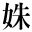

八人みさきの話
田中貢太郎
「七人御先（みさき）」
高知市の南に当る海岸に生れた私は、少年の比（ころ）、よくこの御先の話を耳にした。形もない、影もない奇怪な物の怪（け）の話を聞かされて、小供心に疑いもすれば、恐れもしたものだ。
「彼（あ）の人は、七人御先に往き逢うたから、病気になった」
外出していて不意に病気になったり、頓死したりする者があると、皆それを七人御先の所為にした。ある者は、その七人御先を払うために行者を呼んで、加持祈祷をしてもらった。七人御先に対する恐怖は、今でも私の神経に生きている。
この七人御先の伝説を話すには、先ず、八人御先に係る伝説から始めねばならぬ。
天正十六年十月四日、岡豊（おこう）から大高坂（おおだかさ）へ移ったばかりで未だその城普請の最中であった領主の長宗我部元親は城中へ一族老臣を集めて家督相続の評定をした。それは長男の信親が豊後の戸次（へつぎ）川で戦死したので、四男の盛親を世嗣ぎとして、それに信親の女（むすめ）を配偶にしようと云うのであった。
元親には香川親和と云う二男があったが、その前年に死亡しているので、世嗣ぎは当然三男津野忠親に来るペきものであった。殊に兄の女（むすめ）を妻室にするに至っては、不倫の甚だしきものであった。心ある者は何人（たれ）も眉を顰（ひそ）めたが、皆元親の思惑を憚って口にはしなかった。
「当家には、孫次郎殿がございますから、孫次郎殿を世嗣ぎにするのが当然のことかと思います」
凛とした声が一隅から聞えた。皆驚いてその方に眼をやった。小柄な色の白い男の顔であった。それは吉良左京之進親実であった。元親の弟の子で、元親の女を娶って甥婿となっている者であった。親実は初めに弘岡吉良峰の城に封ぜられ、当時は蓮池に移っていた。
「それに、兄の女を内室にすると云うことは、人倫にもはずれた所為かと思われます」
左京之進は遥に元親の方を見た。
「吉良殿の申されるとおり、孫次郎殿をさし置いて、千熊丸をお世嗣ぎとなされることは、順序を乱すの恐れがあると存じます」
親実の右隣から詞（ことば）を出すものがあった。それは、左京之進の同族比江山親興であった。
「吉良殿の申されるところも一理があると思われますが、お家のことは、お家の頭領になる者の思うとおりにするのが、理の当然かと考えます」
家老の久武内蔵助親信が左京之進の詞を駁した。親信は父内蔵助親直の後を継いで佐川を領していたが、大仏殿建立の用材を献上した時、元親の命を受けて仁淀川の磧（かわら）で、その材木の監督をしていたところに、左京之進親実が数人の者と狩に来た。傲慢な親信は仕事にかこつけて見向きもしなかったので、血気の多い親実は怒って矢を飛ばした。矢は親信の笠に音を立てて放（は）ねかえった。親信はその怨みを何時も持っていた。
「如何に家の頭領であろうとも、人の道にはずれたことがあってはならん、人の家来となって、その君が不義に陥るのを諌めもせずに、却てその不義を助けるとは、言語道断の所業じゃ」
左京之進は親信の顔を睨みつけた。一座はしんとした。
「吉良殿には、奇怪至極なことを仰せられるものじゃ、御主君には、信親殿の討死を御歎きの余り、せめてその姫君を千熊丸の御内室にして、それを忘れたいとの御心でございますぞ、それをお考えなさらずに、彼（あ）れ此れと申さるるは、第一御不孝の所業かと思われます」
親信も負けてはいなかった。
「何が不孝じゃ、不義に陥ろうとしているところを、陥らせまいと思うて諌めておるのじゃ、其処許（そこもと）のような無道人に阿諛（ついしょう）を云われて、人の道を踏はずそうとしているところを、はずさせまいとするに何が不孝じゃ」
「もう、よし、云うな」
不快な顔をして坐っていた元親は、急に立ちあがって奥の間へ入ってしまった。
当時吉良親実は小高坂（こだかさ）――今の県立師範学校の裏手――に住んでいた。彼はその日限り、元親の前へ出仕することを止められた。久武内蔵助が仁淀川の復讐をする時節が来た。内蔵助は日々元親の傍で彼を讒謗した。
桑名弥次兵衛、宿毛（すくも）甚右衛門の二人は、元親の命によって小高坂の邸へ遣わされた。それは天正十六年十月十四日のことであった。親実はその日客を対手にして碁を打っていた。親実は取次が報知（しら）せてくると、おろそうとした石を控えてちょうと考える容（さま）であったが、
「検使に来たと見えるな、今碁を打っておるから、碁が済むまで待たしておけ」
彼は静に石をおろした。客もその後を受けて石をおろしたが、その指端（さき）は慄えていた。彼はその時二十六歳であった。そのうちに碁が終ってしまった。彼は客と石の吟味をした後に、己（じぶん）の石を碁笥（ごけ）に入れて盤の上に置いた。
「それでは検使を迎えようか」
彼は悠々として表座敷へ往って検使を迎えた。桑名弥次兵衛は畳の上を見詰めながら元親の命を伝えた。
「確にお受けいたした、人の運が尽きると、左前となって逆道が多い、逆道で家の立って往く道理がない、長宗我部の家もここ五六年じゃ」
親実は湯殿へ往って、冷たい水で身体を洗って帰り、二人の見る前で静に自殺した。死骸は吾川郡木塚村西分へ葬った。
元親の怒に触れて死を賜わった者は、他に比江山親興、永吉飛騨守、宗安寺真西堂、吉良彦太夫、城内大守坊、日和田与三衛門、小島甚四郎、勝賀野次郎兵衛実信の八人であった。その中で比江山親興へは、中島吉右衛門、横山修理の二人が検使となって往った。親輿は長岡郡比江村日吉の城主で、長宗我部家の老臣の一人であった。親興はその時、大高坂（おおだかさ）城の北に当る尾戸に邸宅を普請し始めたところであった。
勝賀野次郎兵衛には、土居肥前勝行をやった。勝行は検使と云うよりは殺戮使と云う方が当っていた。勝賀野次郎兵衛は親実の家来で蓮池にいた。
「勝賀野は音に聞えた男じゃ、卒爾なふるまいして仕損ずるな」
元親は勝行に注意した。勝行は城を出て西のほうへ向った。
「土居殿、何処へ往かれる」
勝行へ声をかけてから二人の侍が後から来た。塩見野弥惣、野中源兵衛の二人で勝行とは親しい仲であった。
「蓮池の城といっしょに、勝賀野の首を執りに往くところじゃ」
勝行がその理由を話すと、二人もいっしょに往ってやろうと云いだした。
「元親公の云いつけじゃから、御身達を伴れて往くことはならん」
勝行は承知しなかった。其処へまた二人の侍が来た。北代市右衛門と甥の北代四郎右衛門の二人であった。
「和主（おぬし）達は何をしておるのじゃ」
市右衛門が云った。市右衛門叔父甥は、勝行の大事の使のことを聞くと、これもいっしょに往こうと云いだした。勝行はしかたなしに四人の加勢を伴れて往った。
次郎兵衛の家は蓮池城の東南の麓にあった。家の前には一条の路が通じていた。その路をやって来た五人の姿は、もう次郎兵衛の眼に注（つ）いた。五人が玄関口ヘかかると次郎兵衛が両刀を差して出て来た。
「ただいま承るに、左京之進殿には、お腹を召されたとのことでござるが、左京之進殿は元親公の甥婿でござらぬか、この勝賀野がおったなら、やみやみと腹を切らせまいに、返す返すも残念なことをしたものじゃ、其処許達は、定めてこの次郎兵衛を打ちに参ったでござろうが、まあまあ、遠い処を参られたから、粥でもふるまい申そうか」
次郎兵衛はこう云って嘲笑った。
「いや元親公の仰には、左京之進殿ことは、悪逆があったから切腹さしたが、勝賀野次郎兵衛にお構いなく、所領安堵である、ただ左京之進殿の城後（しろあと）を受取り来れとのことでござる」
勝行はこう云って次郎兵衛に安心さして、その隙に乗じようとした。
「元親公がそんなことを云われたか、凡そ君辱めらるれば臣死す、禄を食（は）む者が、主を殺させて安閑と生きながらえることができると思われるか、元親公は無下（なげ）に愚かな人じゃ、飴で小供を釣るような申されようじゃ」
次郎兵衛は肩を揺って笑った。笑いながら体に隙を見せなかった。
勝行等は隙を待っていた。双方の間は殺気立っていた。次郎兵衛は静に大刀を抜いて前へさしだした。
「これは、進士太郎国光の作でござる、これを抜き合すと、方々が幾人かかって来ても手には覚えん」
と云って、にっと笑って鞘に収めた。そして、また脇差を抜いて、それをまた前へだした。
「これは奥州月山と云う名工の鍛えた吹毛でござる、これを抜き合すと、方々の五人や十人は胴斬りにできるのじゃ」
次郎兵衛はこう云って、またその脇差を鞘に収めた。そして、まだ二三寸鯉口が残っておるところで、塩見野弥惣が、
「御意」と云って斬りかけた。
「なんの、うぬが」
次郎兵衛は抜き打ちに塩見野が乳の下へ斬り付けて二段に胴斬りにし、返す刀で野中源兵衛を斬り倒した。そして玄関から庭前（にわさき）へ飛びおりた。勝行と北代の二人は、次郎兵衛を追って往って庭前で斬り結んだ。
北代四郎右衛門が庭木の根に躓いてよろよろとした。次郎兵衛の刀はその腰のつがいに当った。四郎右衛門は倒れた。
「甥の讐（かたき）」
市右衛門は畳かけて斬り込んだ。しかし次郎兵衛の手許へは寄れなかった。市右衛門は思いついたことがあった。
「土居殿、わしは草疲（くた）れたから休息する、ずいぶん働きなされ」
市右衛門はこう云って刀を引いて後へ退った。次郎兵衛と勝行の二人は人交（まぜ）もせずに斬り結んだ。双方とも手傷が多くなって来た。市右衛門は次郎兵衛の後へそっと往ってその両足へ斬りつけた。次郎兵衛は仰向けに倒れた。倒れながら、
「おのれに出し抜かれたか」
と、云って脇差を手裏剣にして、市右衛門を目掛けて投げつけた。脇差は市右衛門の小腹を貫いた。勝行は次郎兵衛の首を執ることができた。
次郎兵衛の墓は、蓮池城の東南麓の畑の中にある。其処には元の次郎兵衛の邸宅を思わすような、千頭（ちかみ）という素封家の邸がある。小さな丘の蓮池城、其処には今でも城の兵糧であった焼米が出るとのことであった。大正九年八月、私はその蓮池城址に登って、その林の中で紅色をした大きな木の子を見つけて、それを採り、其処からおりて、畑の中で村の人がしょうがさま［＃「しょうがさま」に傍点］と云っているその次郎兵衛の墓を見た。
渡守の常七は、渡船（わたし）小屋のなかで火を焚きながら草鞋を造っていた。静な晩で、小屋の前（さき）を流れている仁淀川の水が、ざわざわと云う単調な響をさしていた。常七はもう客もないらしいから寝ようと思いながら、藁を縦縄（たたなわ）から縦縄に通していた。
「渡船（わたし）……」
前岸（かわむこう）になった西の堤から大きな声が聞えて来た。常七は草鞋の手を止めた。
「渡船……」
また大きな声が聞えて来た。
「お――い」
常七はその声に釣り込まれて返事をしながら、
「このおそいのに、面倒な奴じゃ」
常七はのっそりと起ちあがって外へ出た。暗い晩で、川の水が処々鉛色に重（おも）光りがして見えた。石を重りにして磧へ着けてあった渡舟の傍へ往くと、常七は踞（かが）んで重りの石を持って舟へ乗り、それから水棹（さお）を張った。
「渡船……」
三度目の声が鼓膜を慄わして響いた。
「お――い」
舟は中流へ出た。常七は水棹を櫓に代えて斜に流れを切って舟をやった。舟はむこうの水際へ往った。舟底が磧の石にじゃりじやりと音をさした。常七は艫へ立って水棹を突張って客の来るのを待っていた。
「舟の用意はいいか」
何処からともなしに云った。常七はその威に打たれて、
「よろしゅうございます」
と云った。数人の人が舟へ乗り移るような物の気配がして舟が重くなったが、別に人の姿は見えなかった。常七は己（じぶん）の眼の故意（せい）ではないかと思って舟の中を見直した。それでも物の影はなかった。
「急いでむこうの岸へ渡せ」
直ぐ傍で声がしたが、やっぱり物の影も見えない。常七は水棹を持った手をわなわなと慄わした。そして、夢中になって舟を出した。
「これは、蓮池左京殿でござるぞ、不義奸侫の奴ばらに、眼にもの見せんと大高坂へお越になるところじゃ、今にその方達の耳へも、不思議なことが聞えて来るが、その方達にはお咎めがないから、恐れをことはない、帰りにもこの舟に召されるぞ」
舟は何時の間にか東の岸へ着いていた。常七は気がつくと舟を飛びおりて渡船（わたし）小屋へ駈け込んだ。
親実はじめ八人の死は、非常に人の同情を惹いた。それと共に親実の小高坂（こだかさ）の邸や木塚村の墓所には、怪しい火が燃えたり、弾丸のような火の玉が飛んで、それに当った人は即死する者もあれば、病気になる者もあった。これは八人の怨霊であると云いだした。八人御先、この恐ろしい八人の怨霊の噂は、大高坂を中心にして昂まって来た。仁淀川の渡守の見た奇怪も聞えて来た。
その時分であった。久武内蔵助の邸では、五つか六つになった末の男の子が、庭へ出て、乳母や婢（じょちゅう）に囃（はや）されて遊んでいた。小供は乳母の傍からちょこちょこと離れて、庭前（にわさき）の松の木の根元のほうへ往った。其処には小供の気に入りの小さな犬が、沙（すな）の上へ白い腹をかえして寝ていた。
「わんわん」
小供は犬の真似をしていた。松の傍から五十余りの髪の白い女が出て来た。乳母はその女に眼を留めてこの庭前に何しに来た人であろうかと不審した。
「※（きれい）な若様じゃ」
老女はこう云って男の子に近づいて、隻手（かたて）をその肩にやった。男の子は大きな声を出してわっと泣いた。泣いたと思うと、そのまま仰向けに引っくり返って動かなくなった。乳母が驚いて大声をだすと、後の方にいた二人の婢も驚いて走って来た。
「水を、水を」
乳母は男の子を抱きあげて縁側の方へ走った。婢は狼狽（うろた）えて庭を彼方此方と走った。
「若様が大変じゃ、若様が大変じゃ」
乳母が縁側をあがろうとしていると、男の子は呼吸（いき）を吹き返して泣きだした。
怪しい老女の姿はもう庭に見えなかった。男の子はそのまま病気になってしまった。不思議な病気であるから久武の邸では、寺から僧を招んで来て祈祷をしてもらった。僧は小供の枕頭に坐って小声でお経を唱えていた。
小供は急に起きあがって座敷の中を走りだした。
「悪人を生け置いてたまるか、悪人は生け置かんぞ」
そして、また引っくり返って手足をびくびくと動かしだした。僧は一生懸命になってお経を唱えた。僧の顔には汗が出ていた。
「悪人を生け置いてたまるか、悪人は生け置かんぞ」
小供はまたこう叫びながら、体を悶掻（もが）いて畳の上を転げ廻った。
「悪人を生け置いてたまるか、悪人は生け置かんぞ」
その夜の明け方になって、小供は座敷のうちを狂い廻っているうちに、ばったり倒れたがそのまま死んでしまった。
残忍な内蔵助もこれには恐れてしまった。彼は物の怪を払わすために、他の寺からも数人の僧侶を招んで来て祈祷をさした。男の子が死んでから七日目の晩になった。僧侶は仏壇の前で祈祷をしていた。内蔵助とその妻は次の部屋で亡くなった男の子の話をしていた。妻の眼には涙があった。その隣には総領の小供のいる部屋があった。総領は十二三になっていた。
「南無阿弥陀仏」
と、云う声が総領の部屋で聞えた。夫婦は驚いてその部屋へ飛び込んで往った。総領の少年が部屋の真中へ坐って、腹へ短刀を突き立てて苦しんでいた。内蔵助は後から少年の短刀を持った手をぐっと掴んだ。
「なぜ、こんなことをしてくれた」
内蔵助は声を慄わして云った。妻も総領の前へ泣き倒れてしまった。
「元親公の御諚で検使が二人来て、詰腹切らされました」
少年は苦しそうに云って呼吸（いき）をついた。そして、落ち入ってしまった。
内蔵助の妻は、二人の小供を殺した悲しみのために、発狂したのかそれもその夜のうちに自殺してしまった。内蔵助には八人の小供があったが、皆その後で変死してしまって、一番末の男の子が一人残っていたが、それは長宗我部家の滅亡の時に、内蔵助と二人で日向の方へ逃げて往ったのであった。
久武内蔵助の従弟に当る五月新三郎は、ある晩、小高坂へ往って親実の邸宅の傍を通っていた。薄月のさした暖かな晩であった。ふと見ると、十六七に見える色の白い女が一人立っていた。人通りのない淋しい路ぶちに、歳のゆかない女の子が立っているのは不思議であるから、
（もしや、妖怪ではないか）
新三郎は注意したが、別に怪しいそぶりもなかった。ただしょんぼりと立っている容（さま）が、如何にも何か思案に余ることがあって、非常に困っているようであるから傍へ往って声をかけた。
「この夜更けに、壮（わか）い女子（おなご）の方が、一人で何をなされておられる」
見ると立派な服装（なり）をしていた。女は恐ろしそうに新三郎の顔を見たままで何も云わなかった。
「私は五月新三郎と申す［＃「申す」は底本では「中す」と誤植］者で、決して怪しい者ではない」
「私は秦泉寺（じんせんじ）の者でございますが、去年国沢へ縁附きましたところが、夫には他に女子（おなご）が出来て捨てられましたから、淵川へなりと身を投げて死のうと思いましたが、秦泉寺には一人の母がございまして、私に万一（もしも）のことでもありますと、母がどんなに嘆くであろうと思いますと、死にもならず、兎に角秦泉寺へ参りまして、母に一目逢うたうえでと思いまして、夕方に国沢を抜け出しましたが、追手が恐ろしゅうございますから、廻り道をして往こうと思いまして、此処へまで来たものの、恐ろしくて、困っておるところでございます」
こう云って女は涙を見せた。新三郎はそれがいじらしかった。
「それでは私が秦泉寺へ送って進ぜよう」
「それは有難うございますが、遠い処を、そんなことをしていただきましては済みません」
「何、今晩は別に用事もないから、送って進ぜよう」
「では、お詞（ことば）に甘えますが」
女はこう云ってまた何か困ったような顔をしながら脚下に眼を落した。
「それに、馴れぬ夜路をいたしまして、足を傷めて困っております」
新三郎は負うて往ってやろうと思った。
「そんなことなら、負うて進ぜよう」
女は恥かしそうにして笑った。その笑い方が如何にも濃艶であった。新三郎は直ぐ其処へ踞んだ。
「さあ、遠慮なさらずに」
香（におい）のあるような身体がふわりと背に寄りかかった。新三郎は起って軽々と歩いた。
半丁ばかりも往くと、新三郎の背には大盤石が乗ったようになって動けなくなった。新三郎は驚いて後を見た。背の上には恐ろしい鬼の顔があった。長い二本の角に月の光がかかっていた。
「おのれ、妖怪」
新三郎は突然怪しいものを投げ落そうとした。と、新三郎の首筋に大きな手がかかって、その体は宙に浮きあがった。豪胆な薪三郎は腰の刀を抜いて空払に払いあげた。新三郎の体は田の中へ落ちた。
新三郎は田の中で起ちあがった。夜が明けかけて星の疎（まばら）になった空が眼についた。彼は刀を拾って田の畔へあがり小さな路へ出た。
一挺の駕籠がむこうの方から来た。新三郎はこんな容（さま）を人に見られてはと思ったが、一条路で他に避ける処もないので、田の中へ隻足（かたあし）を入れるようにして、駕籠をやり過ごそうとした。駕寵の垂は巻いてあった。駕籠の中には吉良左京之進の姿があった。
「五月氏か、御健勝で」
新三郎はその声を耳にすると共に、ばったり倒れて死んでしまった。
八人御先の噂は日に日に昂まって来た。その噂は元親の耳にも入った。元親は嘲笑った。
「臆病者共が何を云う、そんなばか気たことがあってたまるものか」
恐ろしい火の玉は城の中にも飛びだした。その火の玉に当って発狂する者もあった、病気になる者もあった。元親の傍にいた若侍の一人も、その火の玉に往き逢って病気になり、とうとう死んでしまった。元親もそれには驚いて、城下の寺へ云いつけて祈祷をさした。
寺ではその云いつけどおり、八人の位牌を拵えて本堂の台の上に置き、数十人の僧侶がその前に立って読経をはじめた。この祈祷のことを聞き知った城下の人びとは、見物にとその寺へ集まって来た。
読経は厳粛に行われた。集まって来た見物人は、この読経に耳を傾けて静まっていた。と、台の上に並べた八つの位牌が動きだした。親実の位牌が一番に台の上から飛びおりるように落ちると、後の位牌も順々にしたへ落ちた。僧侶は恐れて読経の声が止んでしまった。親実の位牌を前にして、位牌は列を作って本堂から出て往った。僧侶も見物も眼が眩んだようになって、それをはっきりと見る者はなかった。位牌は何時の間にか消えてしまった。そして、空の方で数人の笑う声が聞えた。
位牌の不思議が元親の耳に入ると、元親も親実はじめ八人の者を殺したことを後悔しだした。彼は国中の寺々へ向けて、二日三夜の大供養をさした。寺々では領主の命を受けて、それぞれ供養をはじめたが、読経していると、僧侶の首が皆右の方へ捻向けられたようになって動かなくなった。
元親はこのことを聞くと家来を己（じぶん）の前へ集めて、八人の怨霊を静める方法を評議した。
傍に使われていた近侍の少年が、急に発狂したようになって云った。
「我は左京之進殿の使者（つかい）じゃ、左京を神にして祭るとなれば、喜んで受けられる」
木塚の親実の墓は、結構を新らしくして社として祭りだした。木塚明神と云うのがそれである。八人御先の怪異は、それといっしょにすくなくなったが、それでも時どきその御先に往き逢ったと云って、病気になったり、頓死する者があったりするので皆それを非常に恐れた。
比江山親興が、元親の検使に詰腹を切らされた時のことであった。親興は一人の家来に耳打をして、それを比江村の己（じぶん）の城へやった。それは妻子を落すためであった。親興には五人の小供があった。
親興の妻は家来の報知（しらせ）によって、五人の小供を伴れ、その夜、新改村の長福寺へ忍んで往った。長福寺の住職は比江山の恩顧を受けている者であった。住職は六人の者を離屋（はなれ）に隠して、何人（だれ）にも知らせないようにと、飯時には握飯を拵えて己（じぶん）でそれを持って往った。
「拙僧の命に代えても、奥様とお子様達は、おかくまい申します」
住職はこう云って六人の者を慰めていた。一方元親の方では、親興の妻子を失うつもりで、日吉の城へ討手を向けたところが、もう妻子は逃亡した後であったから、附近へ人を出して捜索さした。
「親興の妻子の居処を知らして来た者には、褒美の金をやる」
という布告をだした。六人の者が田路を通って長福寺へ入って往くところを、植田の百姓達が見ていた。金に眼のくれた百姓達は訴人となって出た。
数十人の討手は不意に長福寺へ来た。
「比江山の女房小供を渡せ」
住職は驚いたが欺せるものなら欺そうと思った。
「めっそうもない、比江山の女房小供が隠れておるなどとは、存じもよらんことでござる」
「云うな、比江山の女房小供六人が、此処へ入ったところを、植田の者が見ていて、訴人に出たのじゃ、それでもおらんと云うか」
討手の頭（かしら）は住職を叱りつけた。
「でもそんな者はおりません」
「争いは無益じゃ、家探しして捕えめされ」
討手の者は頭の声と共に、ばらばらと寺の中へ駈けあがった。住職はそのまま離屋の方へ走って往って、六人の者を逃がそうとした。三四人の討手は住職を追って来て、彼が離屋の縁側へあがろうとするのを押えて捩伏せた。
「奥様も御子様達も、早く、早く、討手が来たから、早く、早く」
住職は捩伏せられながら叫んだ。討手の者は皆其処へ集まって来た。六人の者は縄をかけられた。
その翌日、比江山の妻子六人は、比江の磧へ引きだされた。六人の成敗せられることを聞いて、附近の者が集まって来て、それを執り囲んで見物していた。
縄をかけられた六人の者は、磧の沙の上に坐らされていた。小さな末の女の子は母の方を見て泣き続けていた。刀を持った首斬の男はその女の子の傍へ往った。
その時であった。見物人を押分けて長福寺の住職が出て来た。住職は狂人（きちがい）のような眼をして、見物人の方を見返った。
「このうちに植田の者はおらんか、なんと云う人非人じゃ、こうして成敗をせられようとしておる者が、可哀そうじゃないか、この怨みはどうしても忘れんぞ」
住職はこう云って腰へ手をやった。その腰には一本の刀があった。住職はその刀を抜いて立ったなりに腹へ突きさした。群集は恐れてわっと声を立てて後へ退いた。住職は刀を引き廻した。首斬の刀はそれと同時に女の子の首に往った。
住職はじめ比江山妻子の死骸は、その日に新改村へ葬られた。その夜からその附近に奇怪なことがありはじめた。火の玉も飛んだ。路で頓死する者があったり、発狂する者があり、病気になる者があった。わけて植田の者にその奇怪が多かった。
「七人御先、七人御先」
人びとはこう云って恐れた。最近になっても植田の者はその七人御先の墓の傍へ近寄ると、きっと奇怪なことが起った。明治になってからも二人の壮（わか）い男が、其処へ草刈りに往ったことがあるが、一人の男は、
「七人御先の墓地へ入らんようにしよう、植田の者に祟りがあると云うから」
と云うと、一人の男は笑って、
「そんなことは昔の迷信よ、今時そんなことがあってたまるものか」
と、うち消して二人でその墓地へ入って、草を刈っていると、黒い蛇が棹立ちになって二人の前へ出て来た。二人は鎌も何も捨てて置いて逃げだした。蛇は二三丁も二人を追っかけたがやっと見えなくなった。
私たちが少年の時に恐れた七人御先は、この新改の七人御先であるように思われる。
底本：「日本の怪談」河出文庫、河出書房新社
1985（昭和60）年12月4日初版発行
底本の親本：「日本怪談全集」桃源社
1970（昭和45）年初版発行
※本作品中には、身体的・精神的資質、職業、地域、階層、民族などに関する不適切な表現が見られます。しかし、作品の時代背景と価値、加えて、作者の抱えた限界を読者自身が認識することの意義を考慮し、底本のままとしました。（青空文庫）
入力：大野晋
校正：松永正敏
ファイル作成：野口英司
2001年2月23日公開
2001年2月24日修正
青空文庫作成ファイル：
このファイルは、インターネットの図書館、青空文庫（http://www.aozora.gr.jp/）で作られました。入力、校正、制作にあたったのは、ボランティアの皆さんです。
●表記について
本文中の※は、底本では次のような漢字（JIS外字）が使われている。
|
「※（きれい）な若様じゃ」
|

第3水準1-15-80
|